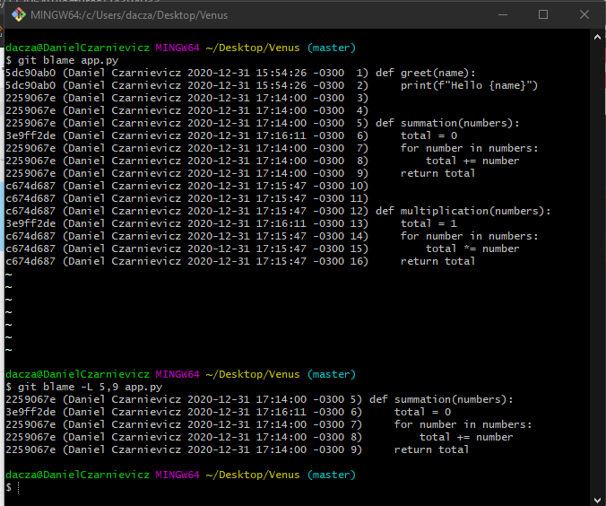

We use blame to find the author of a particular line. To do so we run
git blame file_path/file_name.ext
Git will display the entire file, line by line, with the commit ID in which that line was last changed and the name of the person who changed it. We could add the email with the -e option.
If we don't want to see all the lines in the file we use the -L option and supply the line numbers from where to start and end.
git blame -L start_line,end_line
file_path/file_name.ext
